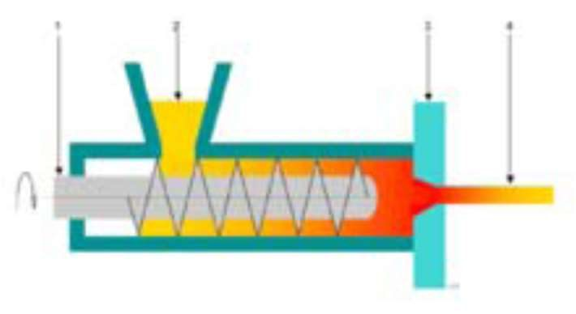
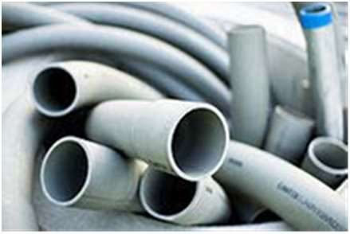

L'extrusion et ses variantes
Une tubulure de perfusion mesure des mètres, avec exactement la même section du début à la fin. Aucun moule ne peut la fabriquer d'un coup : il faut un procédé qui pousse la matière en continu à travers une forme.
L'extrudeuse, parfois nommée boudineuse, comprend : une trémie par où entrent les granulés, une vis sans fin (1) qui tourne dans un fourreau chauffant, une tête d'extrusion (3) qui porte la filière, et l'extrudat encore fluide (4) qui sort de la filière.
Principe : on insère la matière plastique dans un cylindre chauffé ; la matière est poussée par une vis sans fin avant de passer à travers une filière qui lui donne la forme désirée. La vis malaxe, compresse, cisaille, échauffe et transporte en continu la matière fluidifiée et homogène vers la filière.
Matière : une masse molaire élevée et une structure amorphe sont préférées pour l'extrusion. Avec de longues chaînes enchevêtrées, la matière fondue est visqueuse et l'extrudat garde sa forme en sortant de la filière, le temps de refroidir.
| Ce qu'il faut retenir | Extrusion |
|---|---|
| Principe | vis sans fin dans un cylindre chauffé, passage à travers une filière, production continue |
| Matière | thermoplastique de masse molaire élevée, structure amorphe préférée |
| Exemples du cours | profilés pour les fenêtres, câbles, stores, grillages, tubes, tuyaux en PVC |
| Indice | profilé (pièce ayant la même forme) en continu |
Les variantes de l'extrusion
Le cours liste neuf exemples autour de l'extrusion : 1. le principe de l'extrusion des plastiques, 2. l'extrusion-gainage, 3. l'extrusion-formage, 4. l'extrusion-calandrage, 5. l'extrusion en filière plate, 6. l'extrusion-soufflage, 7. l'extrusion-gonflage, 8. le filage, 9. la co-extrusion. La co-extrusion associe deux matières dans le même profilé, par exemple deux PVC, l'un flexible et l'autre rigide. L'extrusion-soufflage a sa propre page (soufflage). L'extrusion-gonflage se comprend avec la figure ci-dessous.
Extrusion-gonflage : variante de l'extrusion où, à la sortie de la filière, on gonfle d'air le tube produit. Il devient une longue bulle de pellicule plastique, une bulle cylindrique verticale. Après refroidissement, on l'aplatit et on l'enroule sur des bobines. Exemples : sacs poubelles, sacs de congélation, et plus généralement la production de films.


À retenir
Extrusion = vis sans fin + cylindre chauffé + filière, en continu. La vis malaxe, compresse, cisaille, échauffe et transporte.
Matière préférée : masse molaire élevée, structure amorphe. Indice : profilé de même forme en continu.
Extrusion-gonflage : tube gonflé d'air à la sortie de la filière, bulle de pellicule, aplatie et enroulée en bobines (sacs).